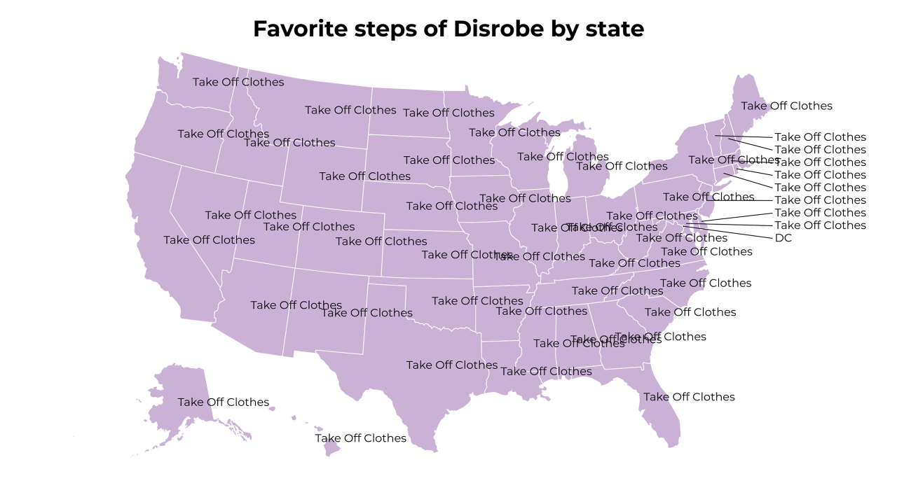
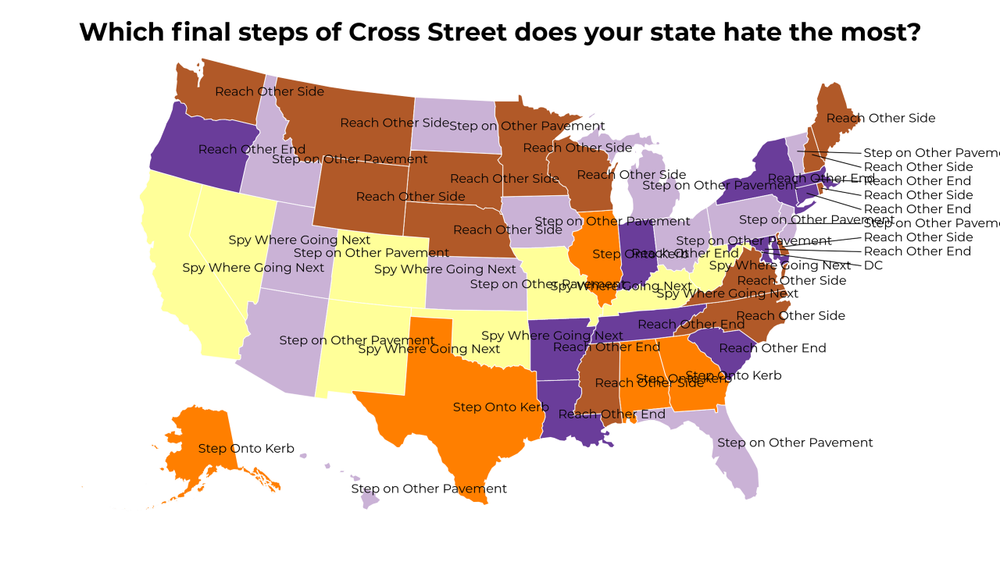
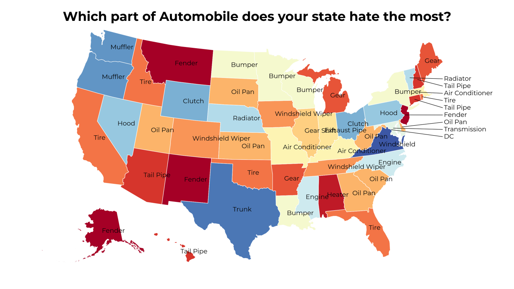
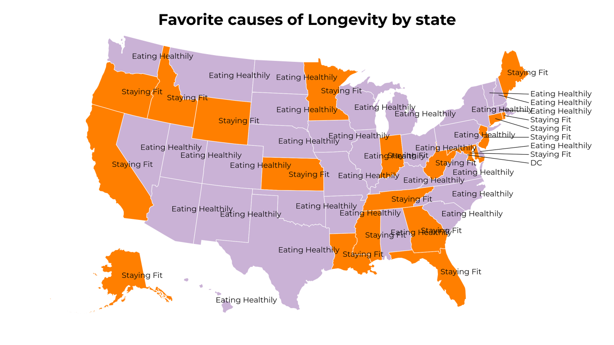
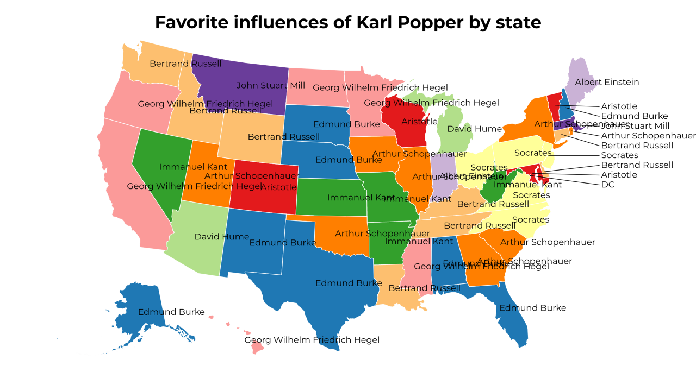
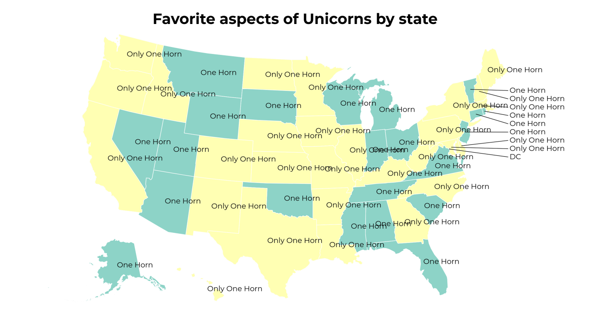
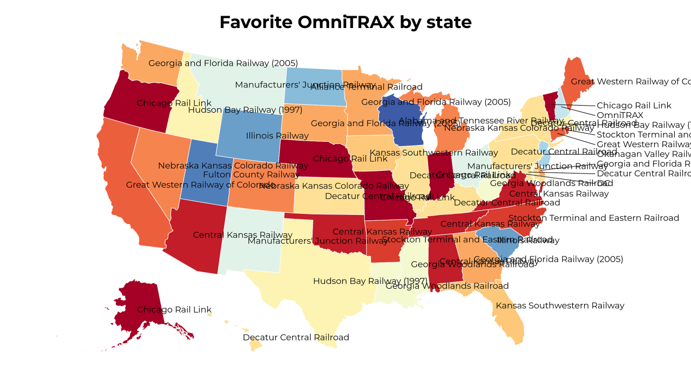
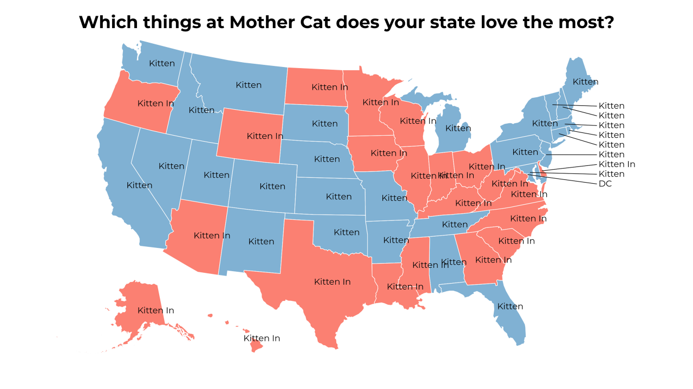
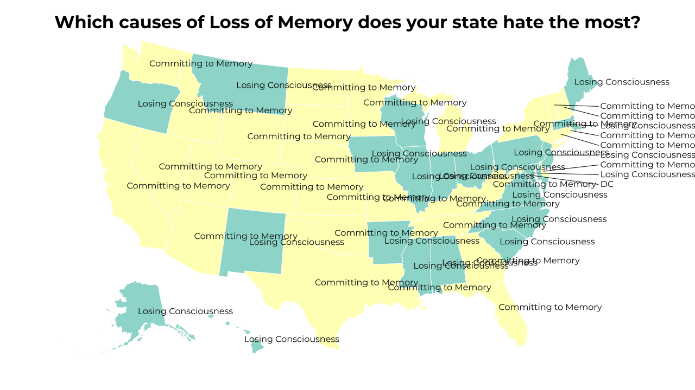

A Land of Contrasts
2018-5-23 14:30:18

Favorite steps of Disrobe by state
2018-5-23 11:30:17

Which final steps of Cross Street does your state hate the most?
2018-5-23 08:30:19

Which part of Automobile does your state hate the most?
2018-5-23 05:30:17

Favorite causes of Longevity by state
2018-5-23 02:30:16

Favorite influences of Karl Popper by state
2018-5-22 23:30:16

Favorite aspects of Unicorns by state
2018-5-22 20:30:24

Favorite OmniTRAX by state
2018-5-22 17:30:16

Which things at Mother Cat does your state love the most?
2018-5-22 14:30:16

Which causes of Loss of Memory does your state hate the most?
29
|
28
|
27
|
26
|
25
|
24
|
23
|
22
|
21
|
20
|
19
|
18
|
17
|
16
|
15
|
14
|
13
|
12
|
11
|
10
|
9
|
8
|
7
|
6
|
5
|
4
|
3
|
2
|
1
|
0